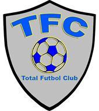

Los Juegos Olímpicos son la celebración deportiva más grande a nivel mundial.
Se realiza cada cuatro años con sede en una ciudad (que es definida con anterioridad
por el comité deportivo internacional) y reúne a deportistas de los cinco continentes
que participan en las distintas disciplinas deportivas representando a su país. Existen
los Juegos Olímpicos de verano y los Juegos Olímpicos de invierno que están inspirados en
los juegos que se organizaban en la antigüedad en Olimpia, Grecia (siglo VIII a.C.). Los primeros
Juegos Olímpicos modernos se desarrollaron en Atenas, Grecia en 1896.